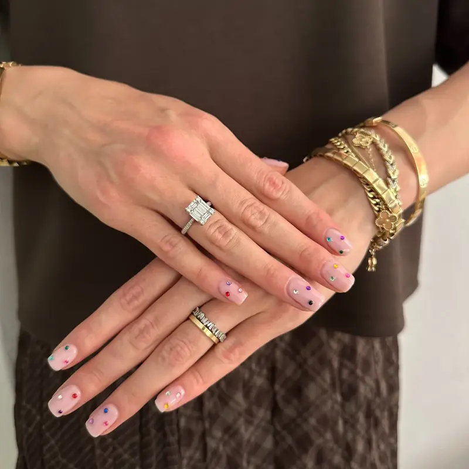

Bostanlı protez tırnak ve kalıcı oje için Fleura Nails semtin tamamına geliyor. Bostanlı, Karşıyaka'nın en yoğun oturulan ve en hareketli semtlerinden biri; sahil hattındaki siteler, iskele çevresindeki apartmanlar ve Yalı'daki evler arasında salon trafiğiyle uğraşmak yerine bakımı adresinize getiriyoruz. Karşıyaka merkez ilçe olduğu için ulaşım fiyata dahildir.

Bostanlı'da Sunduğumuz Hizmetler
Kalıcı Oje
2-3 hafta dayanıklı; klasik, French, ombre, mat ve glitter seçenekleri.
Protez (Jel) Tırnak
Doğal görünümlü uzatma; badem, kare, oval, stiletto ve coffin form.
Rus Manikürü
Frezeli kuru teknik; kesme işlemi olmadan daha temiz ve uzun ömürlü dip.
Manikür & Pedikür
Şekillendirme, kütikül bakımı, nasır temizliği ve nemlendirme.
Nail Art
Kişiye özel tasarım, referans görselden birebir uygulama.
Gelin Tırnağı
Provalı çalışma; düğün, nişan ve kına için ayrı tasarım.
Bostanlı'da Hizmet Verdiğimiz Bölgeler
İskele ve sahil bandından Yalı'ya, Cemal Gürsel hattından Atakent ve Mavişehir sınırına kadar geliyoruz:
Sahil Hattı, Siteler ve Rezidans Randevuları
Bostanlı'da randevularımızın önemli bir kısmı sahil hattındaki sitelere ve iskele çevresindeki apartmanlara gidiyor. Bu adreslerde işleri hızlandıran birkaç not:
- Site girişi: Güvenlikli sitelerde misafir kaydı gerekiyorsa randevudan önce bize bildirin; isim bırakmanız girişte zaman kaybını önlüyor.
- Otopark: Özellikle hafta sonu ve akşam saatlerinde sahil hattında park zor olabiliyor. Site içi misafir otoparkı varsa belirtmeniz yeterli.
- Pazar günü ve etkinlikler: Bostanlı sahili ve iskele çevresi etkinlik günlerinde kapanabiliyor; o günler için randevu saatini biraz geniş tutuyoruz.
- Çalışma köşesi: Deniz manzaralı balkon güzel görünse de rüzgâr ve nem jelin kürlenmesini etkiler; kapalı, aydınlık bir köşede çalışmayı tercih ediyoruz.
Grup Randevusu: Arkadaş, Anne-Kız ve Komşu Seansları
Bostanlı, grup randevusunun en çok tercih edildiği semtlerden biri. Aynı adreste arkadaş grubu, anne-kız veya komşu seansları planlıyoruz: seanslar arka arkaya ilerliyor, aralarda kimse beklemiyor ve tek bir öğleden sonrada herkes uygulamasını tamamlıyor. Doğum günü, kına ve mezuniyet öncesi hazırlıklarda en çok istenen kurulum bu.
Grup randevularında kaç kişi olduğunuzu ve kimin hangi uygulamayı istediğini önceden yazmanız, toplam süreyi doğru planlamamızı sağlıyor. Manikür + kalıcı oje kişi başı ortalama 45-60 dakika, protez tırnak 90-150 dakika sürüyor.
Bostanlı'da En Çok İstenen Uygulamalar
Semtin tırnak alışkanlığı belirgin: protez (jel) tırnak ve dolum, düzenli bakım yaptıran müşterilerde ilk sırada. Badem ve kare-oval formlar, French ve cat eye uygulamaları ile nude tonlar en sık seçilenler. Yazın sahil hattında pedikür + kalıcı oje talebi belirgin şekilde artıyor; manikür ve pedikür sayfasında süre ve kapsam ayrıntılarını bulabilirsiniz. Tasarım isteyenler için referans görselden birebir nail art uygulaması yapıyoruz.
Karşıyaka'nın Diğer Semtleri
Bostanlı, Karşıyaka ilçesine bağlı; Bahariye, Donanmacı, Şemikler, Cumhuriyet ve Goncalar dahil ilçenin tamamına geliyoruz. Hemen batıda Mavibahçe ve Mavişehir, kuzeyde Çiğli, doğuda Bayraklı randevularımız var; aynı güne denk gelen talepleri birlikte planlayabiliyoruz.
Sık Sorulan Sorular
Bostanlı'da eve gelen nail artist var mı?
Evet. Fleura Nails Bostanlı'da İskele çevresi, Yalı, Cemal Gürsel hattı, sahil bandı ve Atakent dahil tüm adreslere gelir; protez tırnak, kalıcı oje, manikür, pedikür ve nail art evinizde uygulanır. Karşıyaka merkez ilçe olduğu için ulaşım fiyata dahildir.
Bostanlı'nın hangi bölgelerine geliyorsunuz?
Bostanlı İskele, Yalı, Cemal Gürsel Caddesi, sahil hattı, Bostanlı Pazar Yeri çevresi, Aksoy, Atakent, Bahçelievler ve Mavişehir–Şemikler sınırı dahil Bostanlı’nın tamamına geliyoruz.
Bostanlı için ulaşım ücreti alıyor musunuz?
Hayır. Bostanlı, Karşıyaka sınırlarında merkez bir semt olduğu için ulaşım, tüm ekipman ve tek kullanımlık steril malzeme fiyata dahildir.
Protez tırnak uygulaması ne kadar sürüyor?
Manikür + protez tırnak + kalıcı oje ortalama 90-150 dakika sürer. Yalnızca manikür + kalıcı oje 45-60 dakika, dolum ise genellikle daha kısadır. Randevu saatini planlarken bu süreleri hesaba katmanız yeterli.
Sahilde oturuyorum; deniz ve nem kalıcı ojeyi etkiler mi?
Doğru uygulanmış kalıcı oje deniz ve havuz suyuna dayanıklıdır. Ömrü kısaltan şey uzun süreli ıslak kalma ve güneş yağı gibi aşındırıcı temaslardır. Denizden sonra tatlı suyla durulamak ve tırnak etine yağ sürmek 2-3 haftalık ömrü korumaya yetiyor.
Arkadaş grubuyla aynı adrese randevu alabilir miyiz?
Evet. Aynı adreste arka arkaya seans planlıyoruz; kimse beklemiyor ve toplam süre tek bir öğleden sonraya sığıyor. Kaç kişi olduğunuzu ve kimin hangi uygulamayı istediğini önceden yazmanız planlamayı kolaylaştırır.
Protez tırnak dolumu ne sıklıkla gerekiyor?
Tırnak uzama hızına göre genellikle 2-4 haftada bir. Dolum adresinizde uygulanır. Fleura Nails’in uyguladığı protezin sökümü yeni randevuya dahildir; başka bir yerde yapılmış uygulamaların çıkarılması ayrı ücrete tabidir.
Bostanlı'da Eve Gelen Nail Artist Nasıl Çalışır?
Bostanlı İskele çevresindeki apartmanlardan sahil hattındaki sitelere, Yalı ve Cemal Gürsel hattından Atakent ve Mavişehir sınırındaki rezidanslara kadar geliyoruz. Karşıyaka merkez ilçe olduğu için ulaşım fiyata dahildir ve ek mesafe farkı çıkmaz. Güvenlikli sitelerde misafir kaydı gerekiyorsa randevudan önce bildirmeniz yeterli.
Randevu saatinde lamba, otoklavda sterilize edilmiş aletler, tek kullanımlık törpü ve buffer ile renk seçenekleri bizimle gelir; sizden yalnızca masa yüksekliğinde bir yüzey, iki sandalye ve bir priz bekleriz. Süreler, evde hazırlık ve fiyata dahil olanların tamamı İzmir evde tırnak hizmeti sayfasında.
Bostanlı'da Randevunuzu Oluşturun
Adresinizi, istediğiniz uygulamayı ve kaç kişi olduğunuzu yazın; Bostanlı'da akşam ve hafta sonu saatleri hızlı dolduğu için erken haber vermeniz avantajlı.
İlgili sayfalar: Güncel fiyatlar · Karşıyaka protez tırnak · Mavibahçe ve Mavişehir
Son güncelleme: